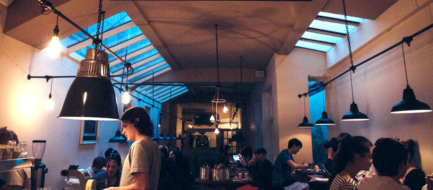

コーヒースクール
コーヒーの機能
コーヒーは発見当初から眠気防止や疲労回復などの作用を持つことに注目されてきた薬用植物です。しかしその一方、コーヒーが過度の刺激剤や興奮剤として働く可能性を指摘し、敬遠する人も存在しています。近年になってコーヒーの制癌作用や抗酸化作用が注目され始めてきました。コーヒーが人体に及ぼす作用は医学・薬学的な関心を集め、さまざまな知見が得られています。
※引用：wikipedia
おいしいコーヒーの淹れ方
さあ、おいしいコーヒーをいれましょう。あなたはどんなコーヒーがお好みでしょうか？ 今度の休日には、新しいコーヒー豆を買いに出かけませんか？
ご自分で淹れたコーヒーはお店で飲むコーヒーとはまた違った味わいを感じることができます。インスタントコーヒーもきちんといれると上質な味と香りを堪能することができます。美味しいコーヒーの淹れ方のポイントは以下になります。
- １. コーヒーは新鮮なものを使用。
- ２. 水は汲みたての新しいものを使って沸す。
- ３. 抽出器具やカップは清潔な物を使用し、あらかじめ温めておきましょう。
- ４. コーヒーは抽出器具に合わせて挽いたものを使用。
- ５. コーヒーと水の量は、適正な分量を使用します（パッケージなどの解説を参考に）。
- ６. 抽出時間や抽出温度を守りましょう。
その他にも、ペーパードリップ式、サイフォン式、ネル・ドリップ式、エスプレッソ式など様々な淹れ方があります。自分好みの入れ方を見つけてみてはいかがでしょうか。全日本コーヒー協会を参考にしております